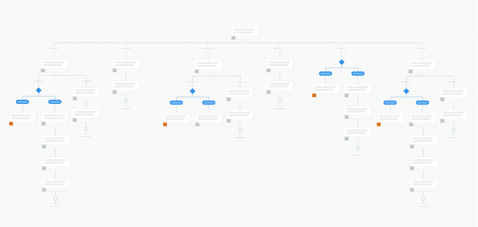
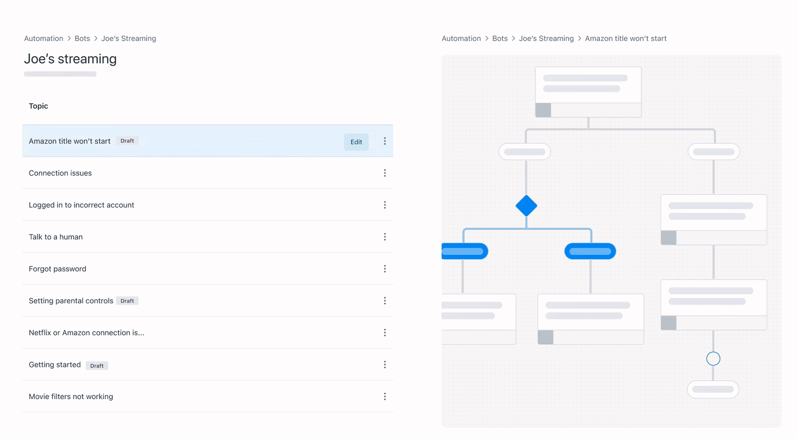
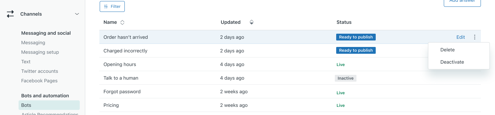

Answer Bot is Zendesk's first party chatbot builder. The wider Answer Bot team includes 2 other designers, a content strategist and researcher along with 4 dedicated product teams. I sit on the bot builder team, and was the primary designer on the Multiple Flows work that I’ll describe today.
The existing experienceOur challenge was to increase adoption by enterprise customers, while continuing to support simpler SMB use cases.
SMBJoe manages a team of 3 chat support agents. They provide customer service through a chat widget on their website. To save his team time, he's built a chatbot using Zendesk Answer Bot. The bot answers a handful of simple queries, including ‘Forgot password' and 'My order hasn't arrived’. He's deflected some repetitive questions, and is happy with the product.
EnterpriseMichelle manages a department of 22 chat support agents. Her goal is to automate answers to at least 80% of incoming customer questions and she’s formed a dedicated 'automation' team to do so. She sees Answer Bot as a basic, beginner level tool, unsuitable for her team's needs.
The product manager and I undertook a number of early research activities, supported by a UX researcher.
Answer Bot’s interface was based on designing an end-to-end conversation as a single flow. This didn't really match our target customer's needs. Rather than a conversation, they needed a list of canned responses. 
Several interviewees shared spreadsheets with hundreds of questions they wanted to target, much larger than the five to ten FAQs that Answer Bot was optimised for. As a result of this mismatch, the few enterprise bots that had been built were complex and difficult to navigate with the pan and zoom controls.
Rather than building a single 'conversation', how can the interface be updated to better support building a 'list of answers'
Over several working sessions, I shared a number of competitor approaches with product and engineering, borrowing the best parts from different competitors and mocking up how they might work in our interface.
The original assumption was that the bot builder would continue to function as a single large decision tree, but we quickly realised a more radical change was needed. We landed on removing the existing model entirely, in favour of multiple smaller flows, each one focused on a different customer request. The customer would type a question, and would be matched to the correct answer through our bot AI. This was a model used by a number of our competitors, and was much better suited to the ‘list of answers’ mindset.

Working with the product manager and 2 tech leads, I stripped back the functionality to an MVP. To keep the scope manageable, we were forced to adapt the original design around some technical constraints. For example, It was very difficult to publish each flow independently. I shared the risks around this with engineering, and we compromised by adding a 'publish status' column and optional 'inactive' state for the first release.

The product manager and I also had regular consults with the data science team throughout the project, leading to a number of improvements to the design, most notably allowing admins to manually add training phrases. This boosted the bot's performance significantly, but the concept of training an AI was difficult to communicate to our users. The content strategist and I iterated on the design several times, over 2 rounds of user testing to get the messaging right.

Given the scale of the changes and the number of adjacent teams impacted by the work. I leaned heavily on video explainers (along with the usual Figma prototypes and diagrams) to share decisions, progress and collect feedback from key stakeholders.
The end result was a set of annotated Figma prototypes describing the experience from various customer's points of view. I presented these to senior leadership, and regularly consulted with engineering throughout the development process.
The product is currently in a closed beta and is scheduled for general release in Q2 of this year.